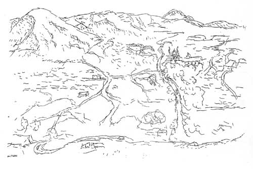

|
| Programa
de Movilidad Estudiantil |
 |
e.[ad]
Escuela de Arquitectura y Diseño
Pontificia Universidad
Católica de Valparaíso.
Av. Matta 12, Recreo,
Viña del Mar, Chile
fono: (56-32) 274401
fax: (56-32) 274421
|
|
1. Definición
Considerando que el propósito de la movilidad
a externos es recibir a estos alumnos y que tengan una experiencia
arquitectónica o de diseño con nosotros La dirección
de la Escuela de Arquitectura y Diseño está elaborando
un plan que da cabida a los alumnos extranjeros en la estructura
del taller de Travesía, el que es impartido, para los alumnos
de la escuela, en el tercer Trimestre de cada año.
Para los alumnos extranjeros este taller de Travesía corresponde
a la asignatura Taller arquitectónico o de Diseño,
esta asignatura junto a la asignatura de Taller de Amereida compone
el Taller de intercambio con una carga crediticia total de 12 créditos
UCV, 10 créditos correspondientes al Taller arquitectónico
o de Diseño y 2 correspondientes al Taller de Amereida.
2. Calendario
El Taller de intercambio se impartirá
durante el tercer trimestre de cada año académico
(Septiembre- Diciembre). (La Escuela de Arquitectura funciona con
trimestres, a diferencia del resto de las Facultades y Escuelas
de la UCV)
2. Descripción del contenido del Taller de
Intercambio
-Taller de Travesía; correspondiente al
taller Arquitectónico y de Diseño
El Taller de Travesía, tiene el objetivo
de que el estudiante experimente una real medición del continente
americano a través de un viaje y una obra que plantea una
relación con la poesía de Amereida la que dice de
asumir el Continente Americano desvelando su desconocido. De allí
que el sentido primario de este viaje no sea el vencimiento de una
meta, por la que se da alcance a los punto fijos y distinguibles
del Continente, sino más bien abrir nuevos puntos por donde
entender y hacer aparecer el desconocido de la Extensión
Americana, ya sea a través de la construcción espacial
arquitectónica y/o de los diseños. El termino de la
travesía implica un remirar la ciudad por lo tanto existe
un tiempo (un tercio de la etapa) en que se realiza un proyecto.
El Proyecto Arquitectónico o Diseño que se realiza
al volver de la travesía tiene el objetivo que el alumno
experimente una maduración del oficio arquitectónico
y de Diseño planteado en un paso de la observación
a la forma habitable y visible. Este taller tiene como materia de
estudio principalmente la ciudad y su acontecer. Se estudia a partir
de observaciones dibujadas de los espacios arquitectónicos
y de Diseño tridimensional y bidimensional que interactúan
con la vida del ciudadano.
Taller de Amereida
Este curso lleva adelante una cavilación
acerca de la visión poética de nuestro continente,
quiere traer la presencia de América a nuestro obrar, por
eso, se lo llama Taller. Insertarse en una tradición es volver
a encarar el origen a la luz del acontecer actual. Es así
como nuestra Escuela mantiene una ininterrumpida visión y
revisión del continente americano. Revisión que, si
bien acepta indicaciones desde otras disciplinas, ella elaborar
un punto de vista peculiar, en virtud de su vinculación original
con la poesía.
Se trata de conocer la tradición de nuestra Escuela entorno
a la relación entre poesía y oficios. Introducir esta
relación con el libro Amereida. Participar de la relación
entre la poesía y los oficios a través de actos, lecturas
y trabajos. Comprender el hecho de la pregunta por América.
¿Por qué hacemos travesías?
Construir el presente americano a través de la participación
en el debate entre la poesía y los oficios. Abrir nuevas
dimensiones que permitan la permanente renovación de la relación
entre poesía y oficios. Preparar los fundamentos de cada
Travesía.

4. Admisión
Los alumnos que postulan a este curso internacional
deben :
- Haber cursado el equivalente al Ciclo Básico en Arquitectura
o Diseño, (para el caso de arquitectura el Ciclo Básico
corresponde a Tres años aprobados y en Diseño a Dos
años aprobados)
- Tener un dominio avanzado del idioma Español. En su defecto,
deben obligatoriamente atender a un curso intensivo de español
(40 horas académicas, realizado durante el mes de Agosto).
Para mayor información acerca de esto dirigirse a piie@ucv.cl
- Enviar carta de Motivación para tener una experiencia en
la Escuela de Arquitectura y Diseño. Para ello se le recomienda
ver la bibliografía descrita más abajo.
- Enviar carta de un Profesor del alumno, que de Referencias acerca
de las aptitudes, fortalezas y debilidades del postulante ya sea
desde lo académico a lo humano.
- Las cartas se debe dirigir al DIRECTOR de la escuela de Arquitectura
y Diseño de la Universidad Católica de Valparaíso
y deben estar escritas en español o inglés.
Además de lo anterior, que se aplica sólo a postulantes
a la Escuela de Arquitectura, los alumnos deben cumplir con los
requisitos generales impuestos por el Programa de Intercambio de
la UCV:
• Tener un comprobante de Seguro Médico que cubra 100%
y ante todo evento durante toda la estadía en Chile (en español
o inglés)
• Acreditación de la Universidad de origen (escrita
en español o inglés)
• Certificado de notas (oficial, en español o inglés)
• Fotocopia de Pasaporte
• Depósito previo de $50 US que se descontará
de la suma cancelada por el semestre.
Todos los documentos anteriores deben ser dirigidos a:
Director de la Escuela de Arquitectura y Diseño
Sr. Arturo Chicano Jiménez
Avda. Matta #12, Recreo, Viña del Mar.
Chile.
|